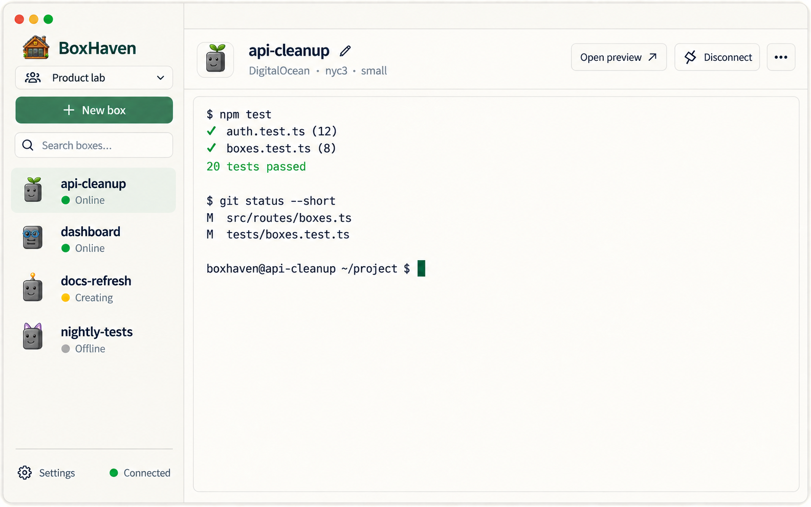
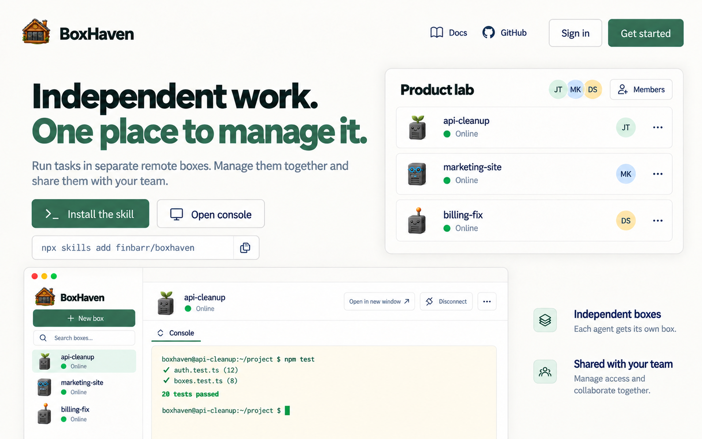
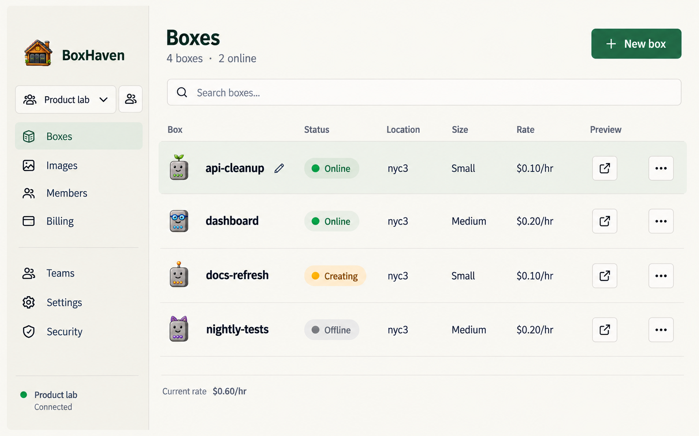
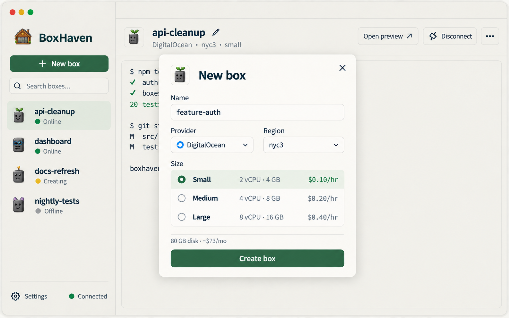
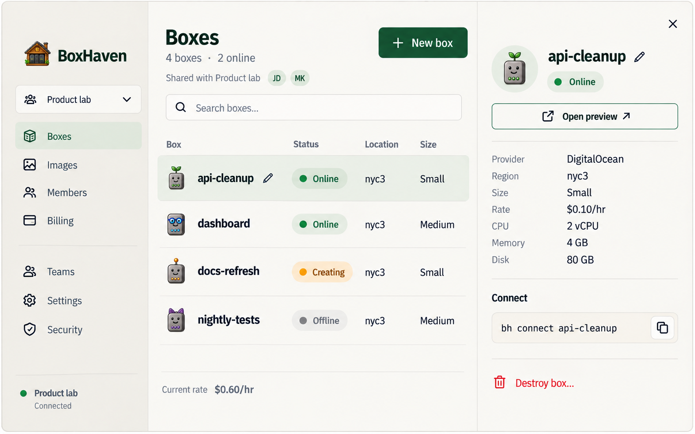
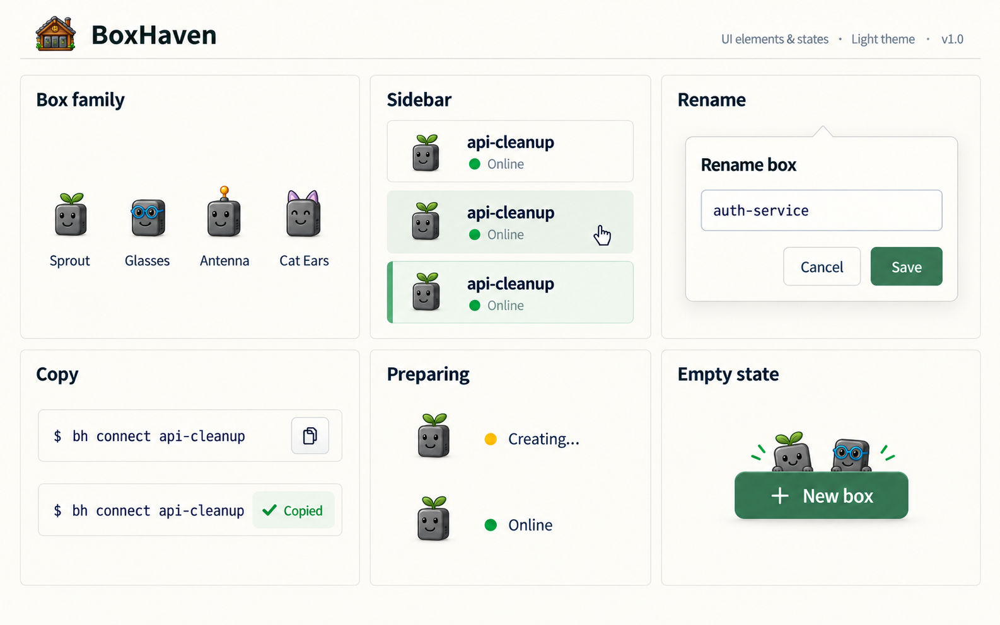
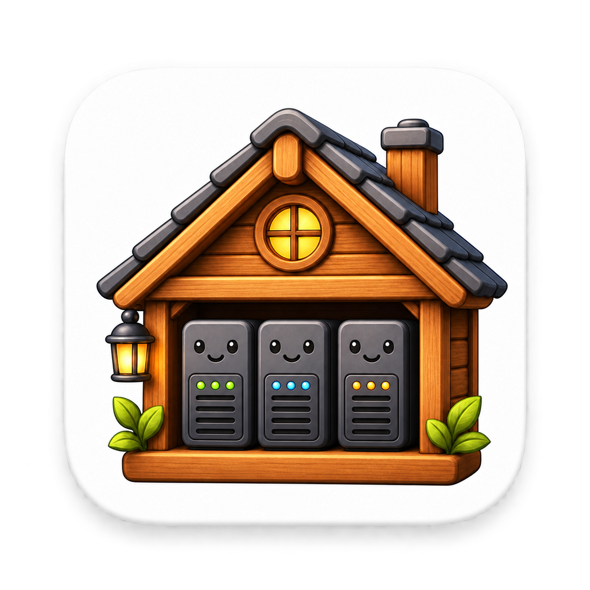

Desktop · Your boxes
Smaller box portraits, team context, and a light terminal.

Website · Home
Independent tasks, one place to manage them, shared with teammates.

Web console · Boxes
The same portraits and controls in a quiet fleet table.

Creation · A box with an identity
Visible size choices and specs, with a small identity preview.

Console · Box details
Compact portrait, team access, clear machine details.

Details · Box family and interaction states
Selection, rename, copy feedback, and modest empty-state characters.

Dock icon · White tile
Existing cabin artwork on a white rounded tile with a soft shadow.
